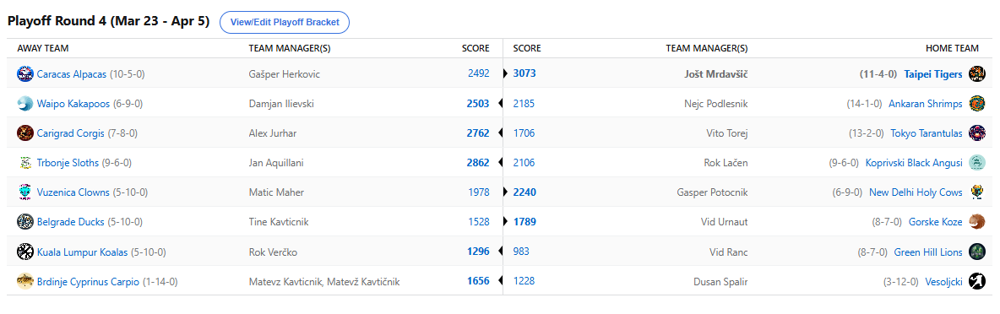

2025/26 - Fantasy Koroška - sezona 9
Playoff Round3 - Finals (Mar 23 - Apr 5)

Recap: Finals
Uspešno smo pripeljali h koncu še 9. sezono NBA Fantasy Koroška. 16 managerjev se je letos borilo za prestiž in bogate nagrade,
na koncu pa je največji kos pogače pripadel Taipei Tigersom in njihovemu GM-u, Joletu.
Tole je po davnem letu 2017 prva titula za LM-ja in prva od uvedbe H2H sistema. S tem je zdaj postal najtrofejnejši manager lige in s trona izrinil Jurharja.
Tigersi so šele prvo moštvo, ki je do zmage prišlo z najboljšim scorom skozi vse kroge playoffa. Tudi razlike pričajo o popolni dominaciji,
povprečno so nasprotnike odpravljali s kar 586 točkami razlike, nikoli pa z manj kot 360. Vsekakor popolnoma zaslužena titla, ki se je
nekako napovedovala že 3 sezone. Po predlanskem kiksu v finalu in lanski neverjetni smoli s kar 8 poškodbami pred začetkom četrtfinala,
je končno napočil čas, da prestižna lovorika leto dni krasi Janeško vitrino. Moštvo je kakopak slonelo na Victorju Wembanyami, ki po
lanskem krvnem strdku tokrat ni razočaral, v finalu je denimo zabeležil kar 416 točk in ubil upanje v nasprotniku tako rekoč že po par dneh.
Tudi supporting cast, ki ga je vodil izvrstni Jalen Johnson, ki je bil celo 8. najboljši igralec sezone, je bil izjemen – Josh Giddey,
Brandon Miller, Chet Holmgren, predvsem pa bisera iz sredine drafta: VJ Edgecombe in Stephon Castle. Za piko na i pa še edini B2B prvak
izmed igralcev, Quentin Grimes. Čestitke vsem, zasluženo!
Drugo mesto je zabeležil Herko, ki je že z uvrstitvijo v finale presegel pričakovanja. Ne bo se pretirano sekiral ob tem porazu, če pa že pa bo 75€ zagotovo pomagalo
pri brisanju solz. Vsekakor je to zadnja sezona, ko si Herko drafta Moranta, tudi The Big Purr se ni ravno izkazal, je pa do poškodbe navduševal
Puščavski Pitbull – Dillon Brooks. Slednji je vsekakor na vrhu liste želja za prihajajočo sezono, za tega izvrstnega managerja, ki se zdaj lahko
pohvali s kompletom prvih treh mest in se nahaja na 2. mestu po povprečni uvrstitvi. Čestitamo tudi Gašperju!
Presenečenje sezone pa je vsekakor postal Damjan Ilievski. Slednji je po lanski klavrni krstni sezoni letos prestavil v višjo prestavo in se zavihtel kar na zmagovalni oder.
To mu je uspelo celo z negativnim win-ratom na nivoju sezone (9-10). Odličen je bil tudi v predictionih in s tem bo zagotovo izjemno motivirano
vstopil v jubilejno 10. sezono in komaj čakamo, da nam pokaže česa še je sposoben. Klavrno pa je sezono zaključil Cicko. Po uvodnih 14-0
je šlo vse le še navzdol. Njegov kriptonit Herko mu je najprej preprečil invincible season, nato pa ga je še izločil v polfinalu. Sicer
kar gladko, česar ne moremo reči za Nejčev polfinalni obračun, ko je tako rekoč ena napačna odločitev pri postavi stala polfinala njegovega
rivala – Aleksa. Slednji je na koncu sezono sklenil kot 5. in vsaj obranil naziv najboljšega po povprečni uvrstitvi. Prav tako se še vedno
lahko pohvali z 2 naslovoma prvaka, le da zdaj ni več edini s tem dosežkom.
6. mesto je zabeležil Vito, kar je po lanskem 8. še korak naprej za tega sophomorja. Na koncu je sicer ta uvrstitev bolj plod odličnega rednega dela (2. mesto),
kajti v consolation bracketu je komajda zbiral 2000 točk. Kakorkoli, lep dosežek tudi zanj. V obračunu za 7. mesto je slavil Kups, ki je
tam brez težav ugnal Lačna. Nekoliko grenak priokus vsekakor ostaja, po mnenju strokovnjakov je Kups namreč imel letos drugo najmočnejšo
ekipo v ligi, a mu je načrte prekrižal Geps že v play-in fazi tekmovanja. Donke+Flagg combo je bil vsekakor zastrašujoč. Novo sodo uvrstitev
je torej zabeležil Voka, ki v 9 sezonah še niti enkrat ni zabeležil lihe uvrstitve. Že kar 5x pa je bil 8. lol.
9. mesto je vpisal Geps, 10. mesto Maher. Oba sta bila znova izgubljena v povprečju in potrebovala bosta nek preblisk v prihajajočih sezonah, če želita poseči višje.
Lansko drugo mesto je bolj slabo potrdil Urnaut, ki je bil letos komaj 11., je pa vsaj sezono sklenil z zmago nad Tinkijem, ki je bil že 3.
v zadnjih 4 sezonah na 12. mestu.
Lanski prvak Verčko je očitno spal na lovoriki, kajti letos je bil zgolj 13. in vse močnejše so govorice, da brez Jokiča ne more nič. Jih bo uspel utišati prihodnjo
sezono in se vrniti na zmagovita pota? Ranac se nikakor ne da zraven in morda ga bo motiviralo dejstvo, da ima povprečno uvrstitev slabšo
od one-season playerjev, kot so Sudar, Buda, Plimon in Strel. Sramota tako rekoč in računamo, da gre v tretje rado in se Ranko uvrsti vsaj
v deseterico.
Gajbarja Dule in Matevž, ki sta se merila med seboj kar mesec in pol, pa sta tole sezono za pozabo sklenila na 16. oz. 15. mestu in jo bosta vsekakor poskušala
izbrisati iz spominov drugo leto.
Jubilejna 10. sezona, ki se začne šele čez več kot pol leta, bo, kot zaenkrat kaže ponovno vsebovala enak izbor managerjev in potekala po istem sistemu kot letos.
Razen če se vodstvo lige ob 10. obletnici odloči zadeve nadgraditi. Remains to be seen!
Predictione je po 2 sezonah premora ponovno osvojil Jole, s tem si je prislužil 25€ aka enega Shankyja nagrade. Drugi je bil Jurhar, tretji pa Ilja. Eno nagrado si
je priboril tudi Herko, medtem ko se bodo za kazni »udarili« luzerčki, brata Kavt, Dule in Urnaut. Standardne stranke torej.
Čestitke še enkrat vsem udeleženim, predvsem pa zmagovalcem sezon 9 – TAIPEI TIGERS! Se slišimo oktobra ☹
Best memes